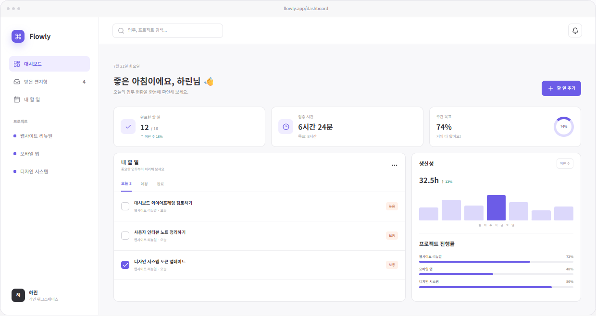

정리하는 힘
흩어진 요구사항을 사용자 흐름과 정보 구조로 명확하게 정리합니다.
DESIGN × AI × CODE × MOTION
사용자의 문제를 명확한 흐름으로 바꾸고,
AI와 코드로 빠르게 검증해 살아 있는 경험으로 완성합니다.
ABOUT ME
한 문장으로 소개하면
흩어진 요구사항을 사용자 흐름과 정보 구조로 명확하게 정리합니다.
AI로 탐색 범위를 넓히고 여러 방향을 빠르게 비교·검증합니다.
장식이 아닌 피드백과 맥락을 전달하는 모션을 설계합니다.
HTML · CSS · JavaScript로 구현하고 반응형 QA와 배포까지 연결합니다.
HOW I WORK
생각을 화면에 머물게 두지 않습니다. 직접 만들고 움직이며 실제 환경에서 확인합니다.
Research · IA · User Flow
질문을 구조로Prompt · Compare · Validate
가능성을 선택지로HTML · CSS · JavaScript
디자인을 제품으로Scroll · Hover · Transition
상태를 경험으로Responsive QA · GitHub Pages
완성도를 결과로AI COLLABORATION
AI가 대신 디자인하지 않습니다.
AI는 더 많이 보고 더 빨리 시도하기 위한 협업 도구입니다. 무엇을 남기고 무엇을 덜어낼지는 직접 판단합니다.

AI EXPLORES×HARIN DECIDES
SELECTED WORK
Warm light, clear structure.
빛과 감성을 담은 라이프스타일 브랜드 프로젝트입니다. 메인, 브랜드 스토리, 제품 컬렉션을 하나의 흐름으로 연결해 제품보다 브랜드의 분위기와 가치를 먼저 경험하도록 설계했습니다.
브랜드 메시지와 비주얼을 먼저 보여주고 다음 콘텐츠로 자연스럽게 연결했습니다.
메인 페이지 보기 ↗브랜드 철학을 스크롤과 타이포그래피 중심의 이야기로 전달했습니다.
브랜드 스토리 보기 ↗제품 정보와 카드 구조를 정리해 탐색의 부담을 줄였습니다.
제품 컬렉션 보기 ↗콘텐츠 우선순위를 재정리하고 여백과 타이포그래피로 시각적 흐름을 명확하게 만들었습니다.
애니메이션을 필요한 구간에만 제한하고 콘텐츠를 강조하는 방향으로 움직임을 정리했습니다.
Flex와 Grid, 세분화된 브레이크포인트를 활용해 다양한 화면에서도 같은 경험을 유지했습니다.
WHAT I LEARNED브랜드 경험은 한 화면이 아니라 모든 접점의 일관성에서 완성된다는 것을 배웠습니다. AI는 탐색을 빠르게 만들고, 최종 경험은 직접 수정하고 검증했습니다.
From browsing to immersion.
영화를 예매하는 기능을 넘어, 콘텐츠를 탐색하는 순간부터 작품의 분위기와 기대감을 경험하도록 재설계했습니다.
포스터와 글로우 인터랙션으로 영화의 분위기를 강조했습니다.
불필요한 요소를 덜어내고 포스터 중심의 탐색 구조를 설계했습니다.
투명도와 카드 레이어를 활용해 화면에 시네마틱 깊이를 더했습니다.
AI WORKFLOW브랜드 분석→UX 구조→UI 시스템→코드·인터랙션→직접 수정·QA
Small records, lasting memories.
One dashboard, one clear flow.
여러 도구에 흩어진 업무와 진행 상태를 한 화면에서 판단하고 실행하며 회고할 수 있도록 설계한 생산성 대시보드입니다.
할 일과 성과 정보가 분리되어 현재 상태와 다음 행동을 함께 판단하기 어려웠습니다.
KPI, 오늘의 할 일, 진행 인사이트 순서로 정보 위계를 다시 구성했습니다.
사용자가 우선순위를 확인하고 필요한 행동으로 바로 이동하는 흐름을 완성했습니다.
AI COLLABORATION문제 탐색→정보 구조→UI 비교→React 구현→직접 수정·QA
서로 다른 브랜드와 사용자 문제를 하나의 일관된 작업 태도로 풀어냈습니다. →
DESIGN · AI · CODE · MOTION · SHIP
함께 해결하고 싶은 문제가 있다면
편하게 이야기를 들려주세요.